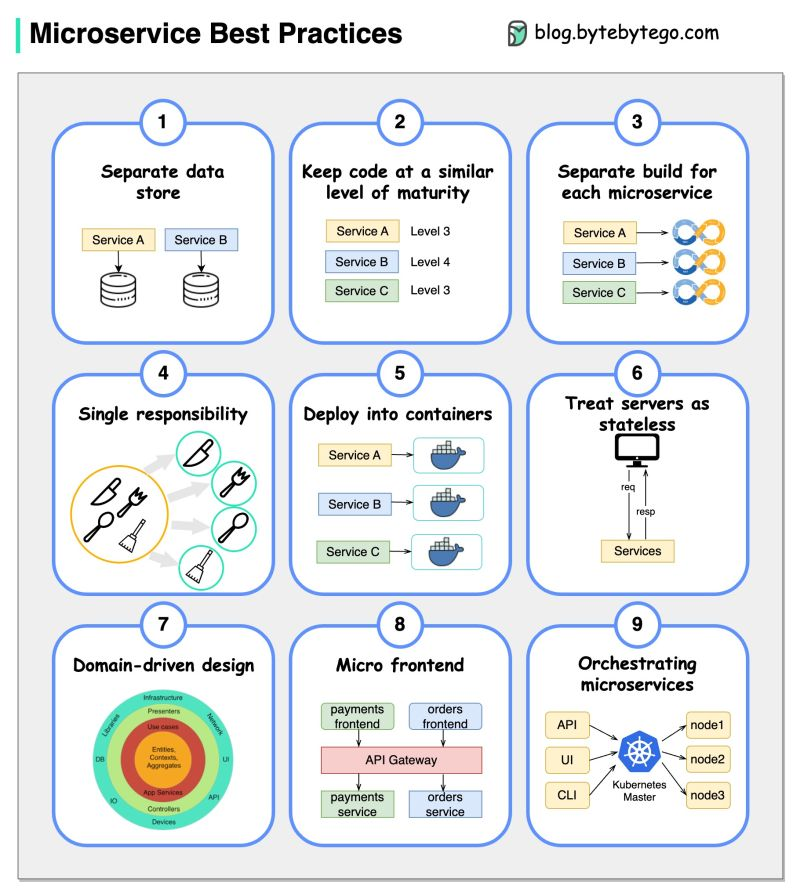
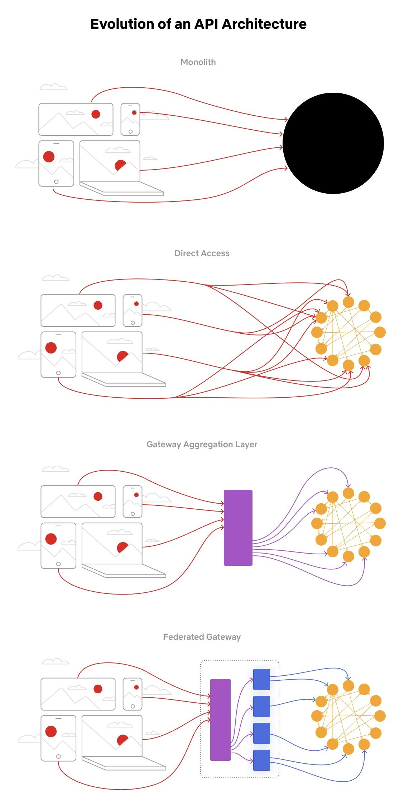

Microservices and Service Mesh
When to split a monolith, how to draw the seams, and what the network layer owes you once you do.
In this lesson
- Why this decision matters more than the tech
- Monolith vs microservices: the real trade space
- Conway's law and team topology
- Decomposition: bounded contexts, not nouns
- Database-per-service and the consistency cost
- Inter-service communication: sync vs async
- Service mesh: pushing concerns into the network
- The strangler-fig migration
- Anti-patterns and failure modes
- Principal-level mastery check
Why this decision matters more than the tech
Microservices is an organizational decision dressed up as an architectural one. The technology — containers, gRPC, Envoy — is the easy part. The hard part is that you are trading a single failure domain and ACID transactions for a distributed system with partial failure, eventual consistency, and an order-of-magnitude increase in operational surface area. A principal engineer is expected to know that this trade is frequently a bad one, and to be able to say so to a room that wants to hear "yes."
Monolith vs microservices: the real trade space
The honest framing is a modular monolith versus a fleet of services. Both can have clean module boundaries; the difference is whether those boundaries are enforced by the compiler/linker (monolith) or by the network (microservices).
| Dimension | Modular monolith | Microservices |
|---|---|---|
| Deployment | One artifact, all-or-nothing release | Independent per-service deploys |
| Cross-module calls | In-process function call (ns, no failure) | Network RPC (ms, can time out, retry, partial fail) |
| Transactions | Single DB, ACID across modules | Sagas / eventual consistency across services |
| Refactoring a boundary | IDE rename, atomic commit | API versioning, dual-write, coordinated rollout |
| Debugging a request | One stack trace | Distributed trace across N hops |
| Failure blast radius | Whole process | Isolated if bulkheaded properly |
| Team scaling | Merge contention grows with team count | Teams ship on their own cadence |
Start with the modular monolith almost always. It is far cheaper to extract a service from a clean module than to merge services back together once you discover the boundary was wrong. Wrong boundaries are the single most expensive mistake in this space — see the distributed-monolith anti-pattern below.
Conway's law and team topology
Conway's law: systems mirror the communication structure of the organization that builds them. The corollary that matters for design is the Inverse Conway Maneuver — deliberately shape your teams to match the architecture you want. If you want three independently deployable services, you need three teams that own them end to end (build, deploy, on-call), not one team that owns "the backend."
- Stream-aligned teams own a service and its full lifecycle.
- Platform teams own the mesh, CI/CD, and shared infra so stream teams do not each reinvent it.
- A service boundary that does not correspond to a team boundary will accrete cross-team coupling until it is a distributed monolith.
Decomposition: bounded contexts, not nouns
The most common decomposition failure is splitting by entity (a "User service," an "Order service," a "Product service") because those are the database tables you already have. This produces chatty, tightly coupled services that all need each other's data on every request.
The principled approach is Domain-Driven Design bounded contexts. A bounded context is a region of the domain where a model and its language are internally consistent. The same word means different things in different contexts, and that linguistic seam is the service boundary.
Heuristics for drawing the seam
- Rate of change: code that changes together should live together. If two "services" always deploy in lockstep, they are one service.
- Data ownership: a single service should be the system of record for each piece of data. Two services writing the same row is a red flag.
- Transactional boundaries: operations that must be atomic should ideally live inside one service. If a business invariant spans services, you have signed up for a saga (see Distributed Transactions).
- Failure isolation: a high-traffic, failure-prone subsystem (e.g., third-party payment integration) is a good extraction candidate so its failures do not take down checkout.
Database-per-service and the consistency cost
The non-negotiable rule of microservices: each service owns its data and exposes it only via its API. No shared database, no other service reading your tables directly. The shared database is the back door through which coupling re-enters; if Service B queries Service A's schema, you can never change that schema without breaking B, and you are back to a monolith with extra network hops.
The cost of this rule is that you lose cross-service joins and cross-service transactions. The consequences:
- No distributed ACID transactions in practice. You coordinate with sagas: a sequence of local transactions with compensating actions on failure. Orchestrated (a coordinator drives steps) or choreographed (services react to events). See Distributed Transactions and Event-Driven Architecture.
- Eventual consistency by default. Read-after-write across services is not guaranteed. You must design UIs and APIs to tolerate staleness, or use techniques like the outbox pattern to publish state changes reliably. Ground this in Consistency Models and PACELC.
- Data duplication is expected. The Shipping service keeps its own copy of the address it cares about, kept in sync via events / CDC. This is not denormalization gone wrong; it is the price of decoupling.
- Reporting moves out of band. You cannot run a join across twelve service databases for a dashboard. Stream changes into a data lake or warehouse (Batch and Big Data Processing) and query there.
The transactional outbox
The classic dual-write bug: you write to your DB and then publish to Kafka, and the process crashes between the two. Now your state and your events disagree. The fix is to write the event into an outbox table in the same local transaction as the state change, then a separate relay (often CDC reading the WAL — see Stream Processing and CDC) publishes it.
BEGIN;
UPDATE orders SET status = 'CONFIRMED' WHERE id = 42;
INSERT INTO outbox (aggregate_id, type, payload)
VALUES (42, 'OrderConfirmed', '{"orderId":42,...}');
COMMIT;
-- Debezium tails the WAL, publishes outbox rows to Kafka,
-- marks them sent. At-least-once delivery; consumers idempotent.Inter-service communication: sync vs async
Every network hop you add couples availability multiplicatively. If a request fans out to five services each at 99.9% availability, your composite availability is 0.999^5 ≈ 99.5% — you have lost an order of magnitude of nines by chaining synchronous calls.
| Synchronous (request/response) | Asynchronous (events/messaging) | |
|---|---|---|
| Protocols | gRPC, REST/HTTP, GraphQL | Kafka, SQS, RabbitMQ, NATS |
| Coupling | Temporal: callee must be up now | Decoupled in time; broker buffers |
| Availability | Multiplicative degradation | Caller survives callee being down |
| Consistency | Easier read-after-write | Eventual; design for it |
| Latency | Sum of hops on critical path | Off critical path; producer doesn't wait |
| Best for | Queries needing an immediate answer | State propagation, work that can be deferred |
OrderPlaced; Inventory, Shipping, and Notifications react independently. The user gets a response after one local write, not after five blocking RPCs." For protocol choice within sync calls, they distinguish gRPC (internal, low-latency, contract-first) from REST/GraphQL (edge, client-facing) — see API Design.Whatever the style, async or sync, network calls fail. You need timeouts, retries with jitter, circuit breakers, and bulkheads on every dependency — see Resilience Patterns. The question is where those live, which leads to the mesh.
Service mesh: pushing concerns into the network
Once you have dozens of services, every team is independently implementing TLS, retries, timeouts, load balancing, and tracing — usually inconsistently, in whatever language they chose. A service mesh extracts these cross-cutting concerns out of application code and into the infrastructure layer.
The sidecar model
The dominant implementation (Istio, Linkerd, Consul Connect) deploys a proxy — almost always Envoy — as a sidecar container next to every service instance. All inbound and outbound traffic is transparently redirected through the local proxy (via iptables or eBPF). The application thinks it is talking to localhost; the mesh handles everything between.
- Data plane: the fleet of Envoy sidecars that actually move bytes.
- Control plane: Istio's
istiod/ Linkerd's controller, which pushes config (routing rules, certs, policy) to the proxies via xDS APIs. The control plane is not on the request path.
What the mesh gives you
- mTLS everywhere. The mesh issues short-lived certs (SPIFFE identities) and encrypts and mutually authenticates all service-to-service traffic with zero application code. Foundational for zero-trust — see Security in System Design.
- Traffic management. Weighted routing for canaries (1% to v2), blue/green, mirroring (shadow traffic to v2 without serving it), header-based routing. Decouples deployment from release — see Deployment Strategies.
- Resilience primitives. Retries, timeouts, circuit breaking, outlier detection (eject an instance after N consecutive 5xx), and rate limiting — declaratively, uniformly, in any language.
- Observability. Because all traffic flows through Envoy, you get consistent golden-signal metrics (latency, traffic, errors, saturation), distributed-trace span propagation, and access logs for free — see Observability.
# Istio VirtualService: 95/5 canary with retries + timeout
apiVersion: networking.istio.io/v1beta1
kind: VirtualService
metadata: { name: payments }
spec:
hosts: [ payments ]
http:
- route:
- destination: { host: payments, subset: v1 }
weight: 95
- destination: { host: payments, subset: v2 }
weight: 5
timeout: 800ms
retries:
attempts: 2
perTryTimeout: 300ms
retryOn: 5xx,reset,connect-failureNote the mesh handles east-west (service-to-service) traffic. North-south (client-to-cluster) ingress is the job of an API gateway, which may itself be an Envoy-based gateway but lives at the edge doing auth, rate limiting, and request shaping. Don't conflate the two. The mesh complements the orchestration layer covered in Containers, Kubernetes and Serverless — Kubernetes schedules the pods, the mesh governs the traffic between them.
The strangler-fig migration
You rarely get to build microservices greenfield; you migrate a monolith. The big-bang rewrite is the reliably catastrophic option (you freeze features for 18 months and ship a system you can't compare to the original). The disciplined approach is the strangler-fig pattern, named for the vine that grows around a tree and gradually replaces it.
- Put a facade / routing proxy in front of the monolith so all traffic flows through a layer you control.
- Identify a bounded context with clear seams and high value (often something painful to change or scale in the monolith).
- Build the new service alongside; route a slice of traffic to it via the facade, falling back to the monolith.
- Migrate data ownership for that context — frequently the hardest step. CDC (Stream Processing and CDC) to keep the new store in sync during the cutover, then flip the system of record.
- Once the new service owns the context entirely, delete the monolith code path. Repeat.
Anti-patterns and failure modes
- Distributed monolith. Services that must be deployed together, share a database, or chain synchronous calls so tightly that one being down breaks all of them. You took on every cost of microservices and got none of the independence. This is the default outcome of bad boundaries — and it is worse than the monolith you started with, because now your tight coupling runs over an unreliable network.
- Nano-services. Splitting so finely that a single user action fans out across 30 services. The coordination, latency, and operational cost dwarf any benefit. Services should be as large as a team can own, not as small as a function.
- Shared libraries as hidden coupling. A "common" library every service depends on means a change to it requires redeploying everything — a deployment monolith wearing a microservices costume.
- Synchronous call chains. A → B → C → D on the request path. Latency adds, availability multiplies down, and a slow D backs up the whole chain. Flatten with async events or aggregation.
- Premature decomposition. Splitting before you understand the domain locks in boundaries you'll regret. Moving a boundary in a monolith is a refactor; moving it across services is a project.
- Ignoring the operational bill. Microservices demand mature CI/CD, centralized logging/tracing, service discovery, and on-call rotations before you split, not after. Without them you have multiplied your incidents and removed your ability to debug them.
Principal-level mastery check
Sharp questions to test your own understanding:
- "You have one 12-person team and a monolith hitting scaling limits. Talk me out of microservices — what would you do instead, and when would that stop working?"
- "Two of your services both need to write the customer's shipping address atomically with an order. Walk me through how you keep them consistent without a distributed transaction. What's the failure mode of your approach?"
- "Your checkout request currently fans out synchronously to inventory, pricing, fraud, and payments. p99 is terrible and one slow dependency takes down checkout. Redesign the data flow."
- "When would you not deploy a service mesh, and what would you use instead? What does Envoy cost you per request and per pod?"
- "Your retries are configured in the client library, the mesh, and the gateway. Production has a retry storm during a minor blip. Diagnose it and tell me the principle that prevents it."
- "You're 40% through a strangler migration and the business reprioritizes for two quarters. Is your system in a safe state? Why is that different from pausing a rewrite?"
Visual references



Managed offerings for this component
The same concept, by name, across the big three clouds — so you reach for the right term in a design discussion:
| Concern | AWS | GCP | Azure |
|---|---|---|---|
| Service mesh | App Mesh | Anthos Service Mesh (Istio) | Open Service Mesh / Istio on AKS |
| Service discovery | Cloud Map | (GKE DNS / Service Directory) | (AKS DNS) |
Managed offerings as a vocabulary aid; cloud product names change — verify the current name before relying on it in production.